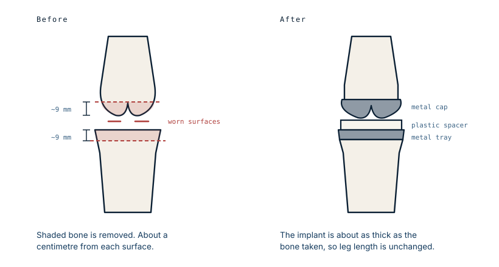

A knee replacement does not replace the knee
The name suggests the joint comes out and a mechanical one goes in. It does not. About a centimetre of bone is taken off each surface and the ends are capped, like crowning a tooth. Understanding that explains almost everything else about the operation, including why some people are disappointed by it.
What actually comes off
Arthritis destroys cartilage, the smooth layer that lets the bone ends glide. Once it is gone, bone grinds on bone. The operation removes the damaged surfaces and covers what remains with a bearing that slides.
The amount taken is smaller than most people expect. A standard distal femoral cut removes in the region of nine millimetres from the end of the thigh bone, with a similar thickness off the top of the shin bone. The shaft of the femur, the shaft of the tibia, and everything above and below the joint are untouched.

The metal blocks in the operating photos
Anyone who has seen photographs from a knee replacement notices the steel blocks clamped to the bone. Those are cutting guides, and they are the reason the operation is reproducible.
An implant only works if the cuts are accurate to within a degree or two, in several planes at once. No surgeon does that freehand. The guides are pinned to the bone in a position set by anatomical landmarks or alignment rods, and the saw runs in a slot. Robotic systems, which get a great deal of attention, are a refinement of the same principle: they replace the physical slot with a tracked boundary that a plan is made in beforehand.
So the photographs that look most alarming are of the part of the operation that is really about carpentry accuracy.
What goes on
Three pieces, in most designs. A shaped metal cap over the end of the femur, usually a cobalt-chrome alloy, polished on its outer surface. A metal tray on the cut tibia. And between them, a plastic insert made of highly cross-linked polyethylene, which is the actual bearing surface — metal glides on plastic, not on metal. Some patients also get a small plastic button behind the kneecap.
The plastic is the consumable part. It wears slowly over years, and wear debris is one of the mechanisms by which an implant eventually loosens. Improvements in polyethylene, more than in metal, are what extended implant life over the last few decades.
The ligaments decide the design
A knee is stable because of its ligaments, and this is where a replacement differs most from what people imagine. The collateral ligaments at the sides are preserved, and they keep the knee stable afterwards. The anterior cruciate is almost always gone by the time someone needs the operation, and is removed.
The posterior cruciate is a decision. Some designs keep it. Others remove it and substitute for it mechanically, with a post on the plastic insert that engages a box in the femoral component — which requires taking a few extra millimetres of bone. Neither approach is clearly superior across all patients, and the choice depends on the state of the ligaments and the surgeon's judgement.
How long it lasts
Registry data is good here, because these operations are tracked nationally in several countries. Roughly 90 to 96 in 100 implants are still in place at ten years. At twenty to twenty-five years, the figure is somewhere around 82 to 90 in 100, depending on the registry and the population.
Age at surgery matters more than most factors. Younger patients have higher revision rates, because they live longer with the implant and demand more of it.
The number the brochures leave out
Implant survival is not the same as a satisfied patient, and the gap between them is the most useful thing to know before this operation.
Up to one in five people report persistent pain or an unsatisfactory result after a total knee replacement that is, technically, working perfectly. The implant is well positioned, the X-ray is fine, the surgeon has done nothing wrong, and the patient is not happy.
Part of this is expectation. A replaced knee is reliably good at relieving arthritic pain. It is less good at feeling normal. Many patients describe an awareness of the joint, a limit at the end of bending, difficulty kneeling, or a knee that behaves well on level ground and less well on stairs. Someone who goes in expecting to get their twenty-year-old knee back is measuring against something the operation was never going to deliver.
This is not an argument against having it done. For the right patient it is one of the most effective operations in medicine, and the majority do well. It is an argument for being told accurately what it is: a highly reliable treatment for pain, and an imperfect restoration of function.
What this case teaches
The operation is resurfacing rather than replacement, and nearly everything follows from that. Only about a centimetre comes off each surface. The steel blocks in the photographs are jigs, because accuracy is the whole game. The plastic between the metal is what wears out. And the ligaments the surgeon keeps are what make the knee work afterwards. The gap between a technically perfect implant and a happy patient is real, well documented, and mostly a matter of what the patient was told to expect.